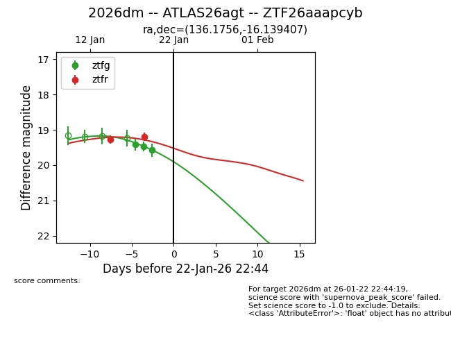
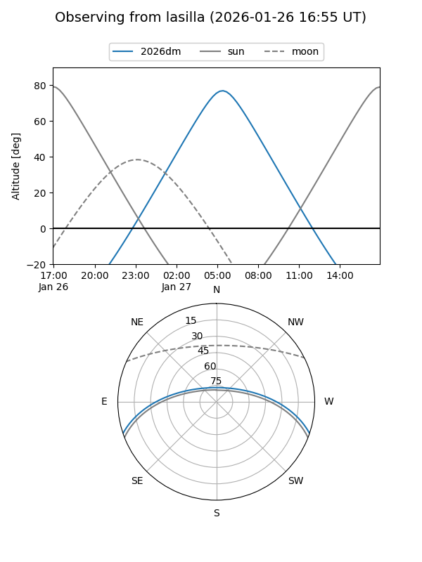
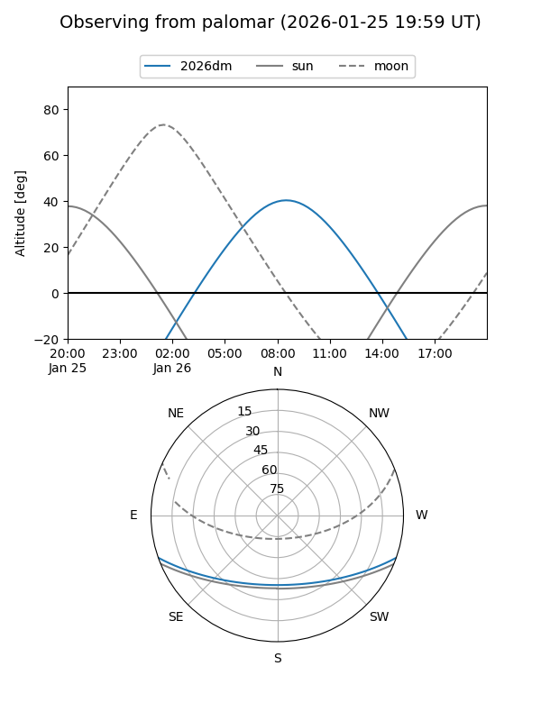
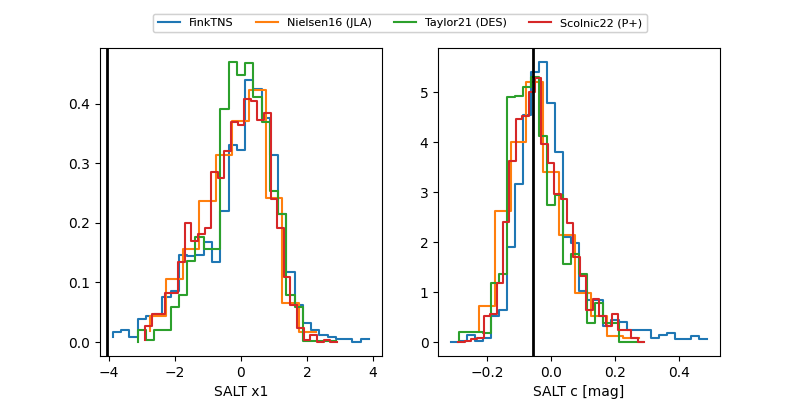

2026dm
Target 2026dm at 2026-01-23 10:51
Aliases and brokers:
FINK: link
Lasair: link
ALeRCE: link
TNS: link
YSE: link
alt names
ZTF26aaapcyb (ztf,fink_ztf)
2026dm (tns,yse)
ATLAS26agt (atlas)
Coordinates:
equatorial (ra, dec) = 136.1756,-16.13941
equatorial (HMS+DMS) = 09:04:42.15,-16:08:21.86
galactic (l, b) = (244.2276,+20.04849)
Flags:
Photometry:
last ztfg=19.57, ztfr=19.20
3 ztfg, 2 ztfr detections
Lightcurve

Visibility


Additional plots
